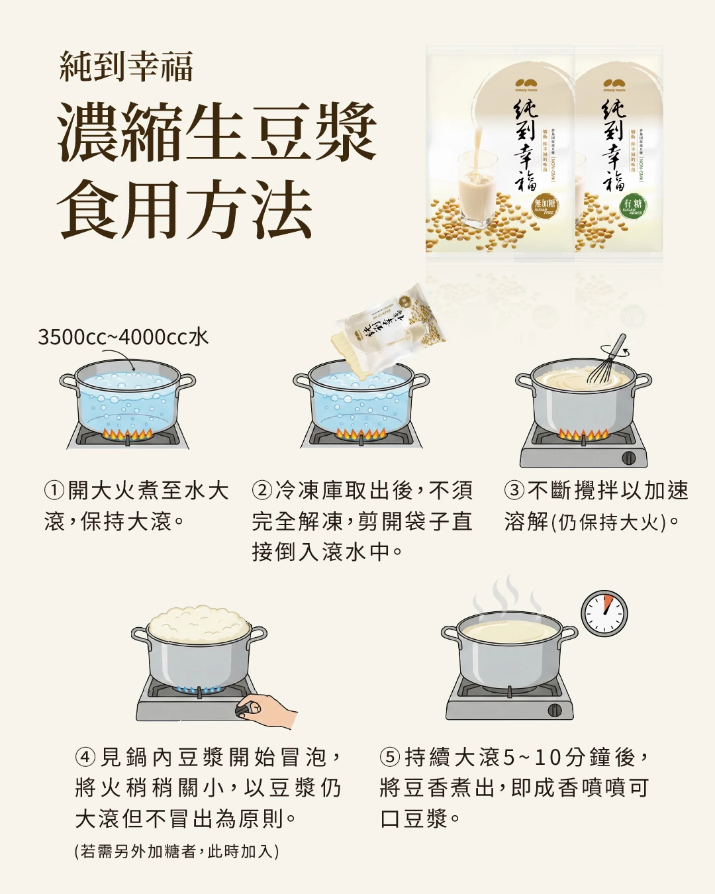

給還在凌晨磨豆漿的早餐店老闆
明天開始，不用再凌晨起來磨豆漿
純到幸福冷凍濃縮生豆漿，非基改黃豆在工廠研磨好、急速冷凍。你只要燒一鍋水、整包倒進去，就是店裡現煮的豆香，而且每天的濃度都一樣。
✓ 填表約 1 分鐘 ✓ 送出申請不用付費 ✓ 業務會先來電確認
Since 2002台中豆漿工廠ISO 22000食品安全管理HACCP危害分析管制SGS非基改檢驗2,000 萬產品責任險
自己磨豆漿的隱藏成本黃豆很便宜，
黃豆很便宜，
貴的是你每天看不見的東西
時間
凌晨的人力
泡豆、磨漿、濾渣、洗機器，每天天還沒亮就要開始，還很難找到人願意做。
設備
磨漿機與濾布
機器要保養、濾布要換，壞了那天就沒豆漿可賣。
損耗
豆渣與失敗
每天一桶豆渣要處理，泡豆時間、天氣一變，濃度就跟著變。
口碑
味道不穩定
換人煮就走味，熟客最先發現，也最先默默不來。
算給你看
你一年花多少時間
你一年花多少時間
在磨豆漿？
輸入你店裡的實際情況，馬上算出來。數字都可以改，用你自己的狀況算最準。
一張表看懂
自己磨 vs 純到幸福生豆漿
自己泡豆磨漿
- 前一晚泡豆，凌晨磨漿
- 要磨漿機、濾布、大桶
- 每天處理豆渣
- 濃度看師傅、看天氣
- 黃豆來源要自己把關
- 人請不到，豆漿就停賣
純到幸福 冷凍濃縮生豆漿
- 一鍋滾水，免解凍直接下鍋
- 只要一個大鍋
- 沒有豆渣
- 工廠固定配方，每包濃度一樣
- 非基改黃豆，SGS 檢驗
- -18℃ 冷凍一年，備貨不怕斷
為什麼可以放心
25 年，
25 年，
早餐店都看得到的老字號
- Since 2002台中神岡自有工廠，2026 年邁入第 25 年
- 食材通路都在賣多家餐飲食材批發商都有販售麥可利生豆漿
- 台北國際食品展參展廠商，國內外採購都看得到
- 檢驗報告可提供Intertek 黃麴毒素、農藥殘留、防腐劑、微生物檢驗
- 出了事有人負責富邦產品責任險 新台幣 2,000 萬元
ISO 22000HACCPNON-GMO 非基改無添加防腐劑冷鏈配送
- ISO 22000 國際食品安全管理系統認證
- HACCP 食品安全管制系統
- SGS 黃豆非基因改造檢驗（純到幸福系列）
- Intertek 全國公證：黃豆黃麴毒素及農藥殘留檢驗
- Intertek 全國公證：防腐劑檢驗、微生物檢測
- 富邦產品責任險 新台幣 2,000 萬元
老闆最常問
「可是…」我們先回答
味道會不會比不上自己磨的？
這是最多老闆擔心的事，所以我們建議先試用。在你店裡煮一鍋，跟現在的豆漿放在一起比，客人喝得出來、你也看得出來。
冷凍的會不會不新鮮？
黃豆研磨後高溫殺菌、急速冷凍，-18℃ 保存一年，有效日期印在封口。比起在室溫下放好幾個小時的現磨豆漿，冷凍反而更好控管。
會不會突然斷貨？
麥可利 2002 年成立、自有工廠生產，專人專車冷鏈配送。冷凍可放一年，店裡可以先備一段時間的量。
成本會不會比較貴？
只比黃豆價格，自己磨通常比較便宜；但加上人力、設備、豆渣和失敗損耗，結果常常不一樣。用上面的試算器算算看，再跟業務拿報價實際比較。
一定要買很多嗎？
起訂量依地區與配送方式不同，業務會依你的用量建議。第一步只要先申請試用。
先試再決定
第一步很小：
第一步很小：
在店裡煮一鍋看看
- 填寫試用申請（約 1 分鐘）留下店名、電話、想試的產品，送出不用付費。
- 業務來電確認確認店家資料、試用品項與送達方式。
- 在店裡試煮比較跟你現在的豆漿比香氣、比口感、比出餐時間。
NON-GMO有糖無加糖1500g／包-18℃ 冷凍
產品規格
| 品名 | 純到幸福 濃縮生豆漿（業務用） |
|---|---|
| 口味 | 有糖／無加糖 |
| 容量規格 | 1500g／包 |
| 箱入數 | 待補 包／箱 |
| 成分（無加糖） | 水、黃豆（非基因改造） |
| 成分（有糖） | 待補 |
| 黃豆產地 | 加拿大、美國（非基改指定豆種） |
| 保存方式 | -18℃ 冷凍保存 |
| 保存期限 | 一年（有效日期標示於封口） |
| 每包可煮出 | 加水 3500～4000cc，約 待補 公升／待補 杯 |
| 配送 | 工廠直營，專人專車冷鏈物流送達 |
食用方法
免解凍，整包直接下鍋

- 開大火煮水3500～4000cc 水置入鍋中，開大火煮至水大滾，保持大滾。
- 直接倒入冷凍庫取出後，不須完全解凍，剪開袋子直接倒入滾水中。
- 不斷攪拌不斷攪拌以加速溶解（仍保持大火）。
- 調整火力見鍋內豆漿開始冒泡，將火稍稍關小，以豆漿仍大滾但不冒出為原則。若需另外加糖，此時加入。
- 大滾 5～10 分鐘持續大滾 5～10 分鐘，將豆香煮出，即成香噴噴可口豆漿。
重要：這是「生」豆漿，一定要煮到完全滾透才能飲用。冒泡不代表已經煮熟（這叫做「假沸」），請務必持續大滾。為什麼？
照片待補：
用生豆漿做的豆花成品
用生豆漿做的豆花成品